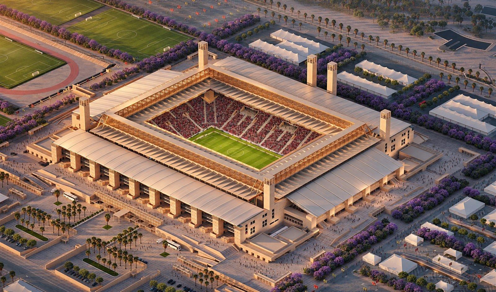
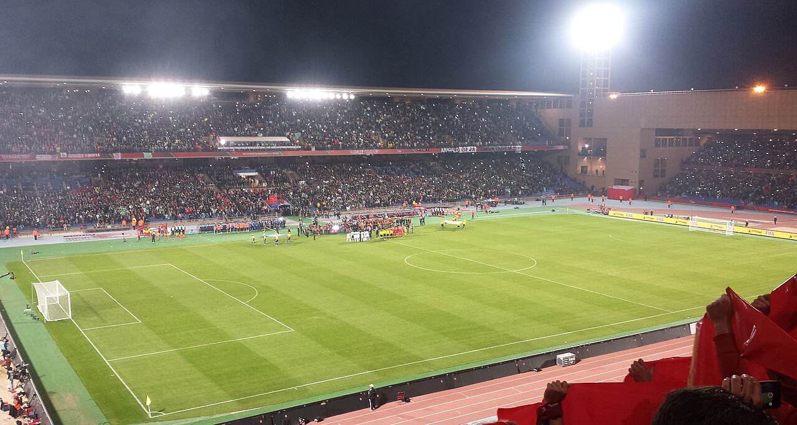
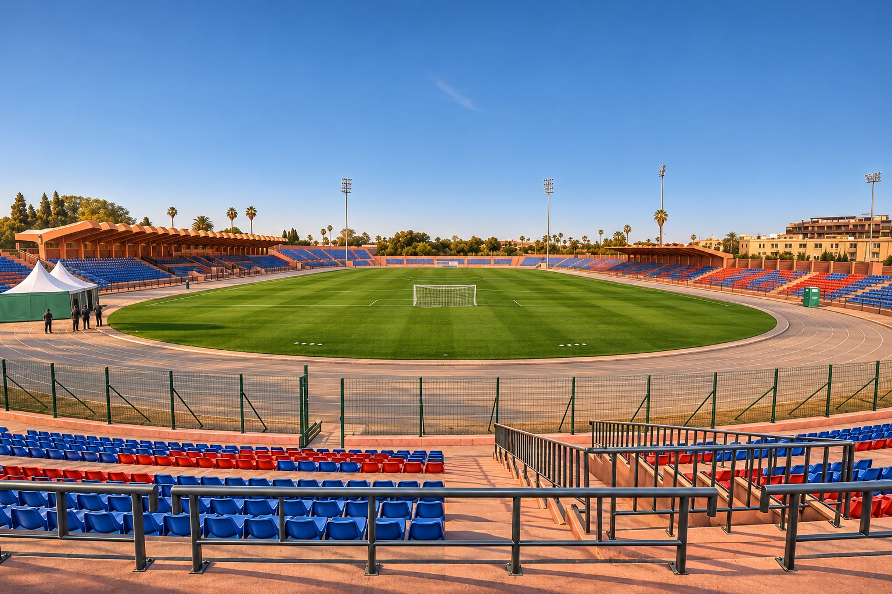

Notre maison
Le Grand Stade
de Marrakech
Inauguré le 5 janvier 2011, à 11 km au nord de Marrakech : la maison du Kawkab pour les grandes soirées.
- 45 240places
- 36 300places couvertes
- 58 hade site
- 2011inauguration
Architecture
Une capacité majestueuse
Conçu par Sâd Benkirane et Gregotti Associati International, le Grand Stade s’étend sur un site de 58 hectares, avec une pelouse naturelle. Sa capacité totale de 45 240 places comprend 36 300 places couvertes, des tribunes officielles, des espaces dédiés à la presse et des places pour les personnes à mobilité réduite.
Géré par la SONARGES, il a accueilli ses premiers matchs le 5 janvier 2011 : Wydad–Paris Saint-Germain (1–1) et Kawkab–Olympique Lyonnais (0–0).

Grandes affiches
Un stade pour les rendez-vous majeurs
- 2013
Coupe du monde des clubs FIFA
Finale remportée par le Bayern Munich.
- 2014
Coupe du monde des clubs FIFA
Finale remportée par le Real Madrid.
- 2018
Championnat d’Afrique des nations
Remporté par le Maroc.
- 2025
Coupe d’Afrique des nations
Dont un quart de finale le 10 janvier 2026.
Le stade a aussi reçu les Championnats d’Afrique d’athlétisme 2014 et la Coupe continentale d’athlétisme 2014, ainsi que plusieurs matchs de qualification pour la CAN.
La mémoire du club
El Harti, la maison historique
Avant le Grand Stade, le Kawkab a joué à El Harti depuis sa fondation jusqu’en décembre 2010. Construit dans les années 1930 dans le quartier du Harti, entre Guéliz et l’Hivernage, ce stade de 10 000 places est resté au cœur de la mémoire du club : c’est le théâtre de la victoire 2–0 au retour de la finale de la Coupe de la CAF 1996.
Rouvert en septembre 2018 après des travaux de 50 millions de dirhams, il a reçu une pelouse naturelle, un nouvel éclairage et de nouveaux sièges. Il a accueilli en 1979 la Coupe intercontinentale Mohammed V et en 1989 la Coupe arabe des clubs champions.

Infrastructures
Les équipements du Grand Stade
- 5 000places au stade annexe, avec piste d’athlétisme à six couloirs
- 1 000 m²de salle de presse, et un centre de premiers secours avec infirmerie
- 7 500places de parking, 16 portes d’accès et une entrée VIP
- 14 kmde l’aéroport Marrakech-Ménara, desservi depuis la gare de la ville
Localisation
Où nous trouver
Vivez le match au stade
Réservez votre place pour le prochain match du Kawkab.
BilletterieSources : Wikipédia (Stade de Marrakech, Stade El Harti).